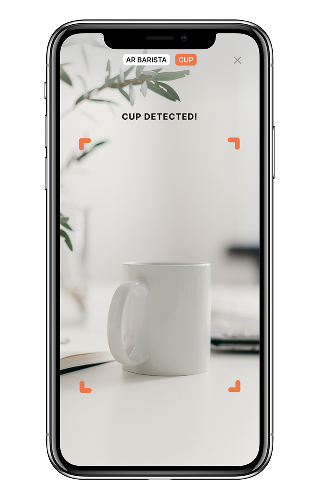
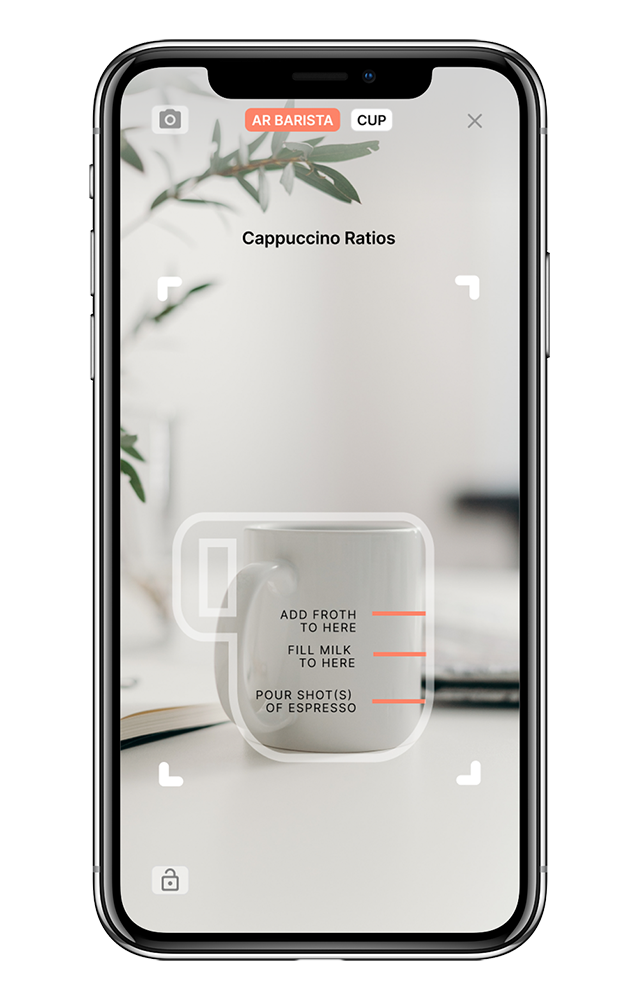
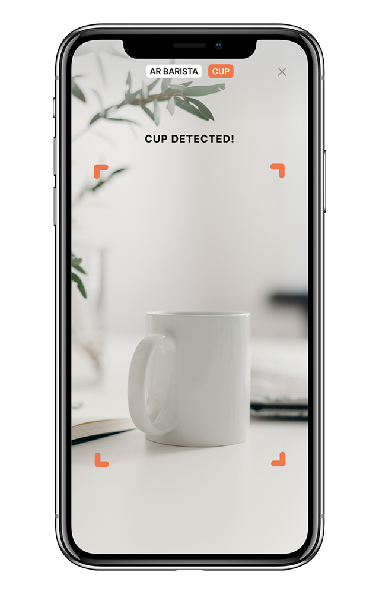
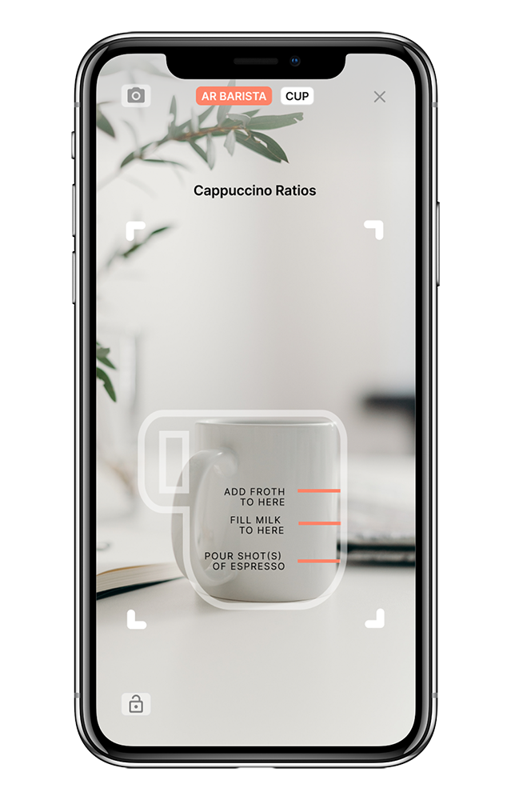

-
Roles
-
UX Designer
-
UX Researcher
-
Content Strategist
-
Visual Designer

-
Design Deliverables
-
Click on the design deliverables below to jump to specified section on this case study.
-
Discovery & Strategy Phase
-
User Surveys
-
User Interviews
-
Competitive Analysis
-
User Personas

-
Specifications
-
Tools
-
Figma
-
Maze
-
Draw.io
-
Usability Hub
-
Adobe Illustrator
-
Adobe Photoshop
-
Duration
-
7 weeks
Summary
Sip is an educational and recipe video site to help others learn how to make the perfect cup of coffee in the comfort of your own home. One of the features and tools of this site is AR Barista Mate, an interactive experience with augmented reality. Through your camera app on your mobile device, assists with pouring the perfect ratios for your recipes.
Problem
At the start of COVID-19, depending on where you reside, “shelter-in-place” was ordered to help #flattenthecurve. Many people are now working from home and those who normally get coffee on the way to work, or at work, now have to make coffee at home.
Solution
Who knows what our lives might be like after this pandemic, but we might be better baristas by the end of this. Sip is a recipe and educational video content site that educates people how to make particular drinks at home. Currently,
starting with coffee, it teaches people who drink coffee the history, the method, and recipes. AR Barista Mate also helps people easily overcome pouring various drink ratios.
Also, “sip” means “to drink (a liquid) a little at a time; take small tastes of”, but it is also serves as a double entendre for the acronym, “Shelter In Place.”
The Discovery & Strategy Phase

User Surveys & Interviews
Understanding our Target Market
I wanted to understand coffee lovers coffee habits, so to learn about our target market, I sent out a survey and interviewed some respondents. For the first survey, I didn’t find a clear direction or trend that stood out from the results, so I deployed a second survey and go a little deeper to understand the needs and wants for an application like this. I wanted to know:
-
Prior to COVID-19 Shelter-in-Place/Quarantine, etc, did you rely on ordering coffee at your local coffee shop?
-
Did you learn new equipment, methods, or how to make new drinks at home?
-
What is their biggest struggle in making coffee?
-
I found their biggest struggle is knowing the perfect ratio of coffee beans : water : creamer/milk or other add-ins to use.
For topics that people wanted to learn more about:
80%
said recipes (ie lattes, Cappuccinos, Mochas, macchiatos)
65%
said the different brewing methods
50%
said Recipes (on how your coffee shop makes them)

Competitive Analysis
Looking at the current competition
I ran a competitive analysis so that we understand our target market and competition. Since we were still brand new in figuring out what type of coffee site or app, we looked at a few leaders in the coffee industry. I chose three different companies: Starbucks, Blue Bottle, and Stumptown Roasteries to understand what they are doing well, and what problems could improve on.
Starbucks
The largest coffeehouse in the world and the main representation of the US’s second wave of coffee culture.
Strengths
Large diversification through products to minimize their risk. They support brewing at home with their At Home site.
Weakness
Higher price points for coffee. Generalized standards for other coffee shops
Opportunities
They’re changing their direction to be more on the go.
To expand their business in-home, and include recipes on their website so you can make starbucks recipes at home. Still serving coffee during COVID-19.
Threats
In a pandemic where stores are having to close temporarily, how are they able to survive?
All in store cafes are temporarily closed, and select grocery and drive thru locations are still open.
Blue Bottle Coffee
A third world coffee culture company that focuses their coffee to “Taste like it was ground moments ago”.
Strengths
A large West Coast fan base & following - in addition to serving beans at peak flavor, they will also have “a good conversation and friendly advice”. Due to COVID-19, they are not making any changes to their baristas and staff. All
their staff will be paid for their scheduled hours.
Weaknesses
Their drip/pour over coffee takes longer to brew if in a rush - and their line could get pretty long.
Opportunities
They have their monthly subscription program, which keeps customers continuously purchasing their coffee, and knowing how much they should be targeting for roasting. Provide Brew guides online and still delivering coffee during
COVID-19.
Threats
Blue Bottle was able to break through and gain an entirely specific target market with customers who love the freshness of their coffee.
Stumptown
Another third world coffee culture company that pays 3-4x fair trade price and received numerous awards for their beans.
Strengths
“They want to help farms become sustainable and to set up strong businesses that build up their communities and produce the highest-quality coffee possible year after year.”
Weaknesses
As a new customer, it was hard to learn and understand their beans. It was hard to figure out which beans to purchase - they don’t have a quiz to help you find beans. It was only until later I found their Tasting Guide as a link to
their blog from their FAQ, and they seem to have mostly medium roast beans.
Opportunities
They do direct trade, meaning they purchase directly from their “producers”. They also have a lot of oat milk drinks, which is popular.
Threats
Since they share their producers, how could a competitor come about and also visit the same?

User Personas
Empathizing with our users
Taking all the information from our survey results, I analyzed the data and looked for patterns, trends, or outliers and created two personas to help put a name, face, and a backstory for all our potential users. By doing so, this helps better empathize with our users and understand the user’s goals, behaviors, and how they would interact with our application.
Gordon W.
Age: 42
Occupation: Engineer
Location: Los Angeles, CA
Gender: Male
Favorite Drink: Pour Over & Espresso
Motivations:
Gordon typically buys coffee from a local coffee shop or drinks coffee at work. Now that Gordon is spending more time indoors due to COVID Shelter-in-place, he is brewing coffee at home more than 7 times a week. He’s trying to learn how to use the Chemex for a good pour over.
Goals:
Wants to quickly learn new methods, and understand ratios.
Frustrations:
Used to purchase coffee on the way to work. Now he needs to learn how to make good coffee efficiently at home.
Rosie W.
Age: 35
Occupation: Healthcare
Location: Bay Area, CA
Gender: Female
Favorite Drink: Oat Milk Latte
Motivations:
Sometimes she is on the go, so she’ll brew a cup and take it with her. On her free time when she’s looking to travel, she will look for other local cafes because she loves the experience. When she’s with her friends, they like to make drinks together, so her main motivation is looking to see if she can make coffee taste as if it was made in the coffee shop.
Goals:
Wants to learn how to make coffee like it was made in a cafe.
Frustrations:
Now that many non-essential places are closed, she can’t enjoy her favorite drinks.
Jennifer R.
Age: 23
Occupation: Real Estate
Location: New York, NYC
Gender: Female
Favorite Drink: All the "in" drinks
Motivations:
Now that Jennifer is at home due to COVID, she wants to learn how to make her favorite coffee drinks at home and use the tools she currently has. She’s tried unique recipes like Dalgona Coffee, which took her about an hour. She wants to record her own YouTube/TikTok videos and share them to stay trending on the latest coffee trends.
Goals:
A young professional that wants to learn new Dalgona Coffee recipe and how to do latte art.
Frustrations:
With so much content out there, has gotten lost with looking for recipes and videos that fit.
Information Architecture Phase

User Stories
Stories for every user
Creating user stories helped me create and prioritize tasks that must be accounted for in the application.
-
As a new user I want to learn different methods on how to make coffee (tutorials)
-
As a new user I want to learn more about what type of coffee I like
-
As an existing user I want to know the ratios of bean/type : grind : water : milk to use
-
As an existing user I want to learn how to learn different methods of making coffee (ie pour over coffee)
-
As an existing user I want to view videos of how to make different drinks: lattes, cortados, quality pour overs
User Flows
Step by step, click by click, tap by tap.
Creating user flows helps us understand each step the users are going to take throughout this website. Based on the user stories mentioned above, I created a user flow, enough for the MVP (minimum viable product).
These userflows helped me visualize a user’s path and also assist with building out the wireframes.

Sitemap & Content Strategy
Building the baseline of this site
At this stage, I built out the sitemap to visualize how an overview of the site would look like. I also collected imagery for all video previews, headlines, descriptions, and even small details the timestamps for all the video content that will be included into Sip.
Building the Sitemap and Content Strategy helped keep information consistent and conceptualize what imagery I will use in the designs when building the high fidelity mockups.
Click photo or link below to view larger.


Wireframes
Building out the website
It was important to visualize our site in wireframes before we begin building. By starting off with sketches, I tested those sketches with users to see if the screens were working as intended. After making a few revisions, the sketches were appended it to digital wireframes.
The Visual Design Phase
With this site starting during COVID-19, I thought about verbs that relate to the way you would consume a drink. One of the verbs, “sip” meaning to drink something by taking small mouthfuls, or like the first thing you do when you drink your coffee, also has a double entendre as an acronym for “Shelter-in-Place” during COVID-19.
From there, I was determined to make the title of this application “Sip”. “Sip at Home”, “Sip Away”, "Sip Sip hooray!" were also considered as an extension of the "Sip" title.
Sip, sip, hooray!
Typography & The Sip Logo
I ran through scripts, sans-serifs, and serif fonts, and I even envisioned that liquid would run behind the words “sip” if that was the logo. For the colors, I wasn’t sure I want to use this color brown, but I created different gradients, lines, and waves.
With a set of logos that could be good contenders, I ran a preference test in Usability Hub and with the logo to collect votes on which logo users liked the most. With 38% of a vote amongst 7 logos, I went with what users preferred the most, the coffee icon with a bold font in Inter.
Later, when putting together my high fidelity mockups, I began to realize the brown logo didn’t have the contrast to “pop”, so I looked for the best hue of orange. I picked orange because it’s a combination of red (which means energy, and coffee gives you energy!) and yellow (which means happiness, coffee makes you happy, too!).
#9A8577
Here’s the original color for Sip.
#F07844
Here’s the updated color and final logo for Sip.
Style Guide
The Style Guide is created to share the direction of styling for the new site, Sip, and helps with passing information down to the developers and the rest of the team who will be working on it.
I want the site to look clean, colorful, but a pop of color to be bright, and gender-neutral. I chose the color orange, because it's a combination of red (energy), and yellow (happy). I picked out the typeface sans-serif Inter, and used different weights to show heiarchy.
Creating the style guide helped turn the wireframes into higher fidelity screens.
Click each photo below to enlarge.


Preference Testing
Do you prefer this or that?
While I was building my high fidelity mockups, I ran some design blocks, so I chose to do some Preference A/B testing to see what users preferred seeing. I asked for feedback on the shape of the frame of the video, the background color of the AR Barista Mate badge, and whether the navigation bar should have a background color. With these results, I continued to put together the high fidelity mockups.
Creating High Fidelity Mockups
In this stage, I built the fidelity mockups. With the users picking out their preferences, it helped me move forward and finish these mockups. In this phase I also changed the colors from brown to find the perfect shade of orange.
I also built out a few screens for AR Barista Mate, the interactive experience through augmented reality for users to help overcome pouring the correct ratios for their recipes.
User Testing
Testing the high fidelity mockups
Throughout the life of Sip, I ran through several user tests such as Preference A/B Testing, User tests through Maze, and in person Usability tests. While all of these tests were done for different purposes, I found that each test helped in making the design decisions.

Based on the feedback from usability testing, and testing via Maze, here are the revisions that were made to Sip:
-
• Include a “play” button for videos so theres a signifier that these are videos, because my users were not sure if these were just pictures, or if it was clickable.
-
• Change the color of the AR Barista Mate Badge from white to orange.
Even though I did a Preference A/B test for the AR Barista Mate badge, I decided to change the badge to orange so it would be noticeable and users wouldn’t miss it.
-
• Adjusting the ‘filter’ button from an “orange” to “gray” to indicate something has changed from the off-state and filter options and the “on-state” where the filters are visible.
-
• Create an extra ‘about’ page for AR Barista Mate and add it to the Navigation Bar.
AR Barista Mate was created because users have issues figuring out the right ratios to use when making their coffee. I made this ‘about’ page to help users understand the features and how to use AR Barista Mate.
-
• Create a Mobile version so AR Barista Mate works.
When people cook and make coffee in the kitchen, what do people typically bring with them? I felt it was necessary to create a mobile version.
Final Design
The Finishing Touches
With all the feedback from the users and senior designers, revisions were made for the finishing touches. Here are some of my revisions:
-
1. Utilizing and implementing the branding colors into more of the AR Barista Mate Badge, filter button, etc.
-
2. Properly displaying the main features of this site: videos and AR Barista Mate. Making the feature of AR Barista Mate more predominant for users to see and include direcitons so users know what to do.
An educational and recipe video content site utilizing augmented reality to easily and efficiently learn how to make coffee in the comfort of your own home.

 


